00이 매뉴얼에 대하여
건축물 용도변경 판정기는 현재 용도와 바꾸려는 용도를 고르면, 두 용도가 속한 시설군을 비교해 허가 · 신고 · 건축물대장 기재내용 변경신청 가운데 어느 절차인지 판정하고 A4 판정서로 출력하는 웹 도구입니다. 건축주 상담과 설계 착수 전 검토에서 화면 순서대로 따라 하며 쓸 수 있도록 작성했습니다.
| 항목 | 내용 |
|---|---|
| 대상 프로그램 | 건축물 용도변경 판정기 MANMIN Ver-5.0(v5.0.6) — 탭 막대 「📘 매뉴얼」 버튼으로 이 문서가 열립니다 |
| 접속 주소 | manminkim-eng.github.io/Change-of-Use |
| 매뉴얼 판 | Ver-5.0 (화면 표기와 같은 판 번호, 초판) · 2026-10-12 · 작성 김만민 건축사(㈜대성건축사사무소) |
| 내려받기 | PDF(A4) · 용도변경 판정기 열기 |
| 예제 | 본문 그림은 예제 A(공동주택 → 제1종 근린생활시설, 「만민 공동주택 1층 근린생활시설 용도변경」)로 캡처했습니다. 판정 허가 후 변경 가능. 예제 B(판매시설 → 업무시설, 신고)와 예제 C(제1종 근린생활시설 → 제2종 근린생활시설, 같은 시설군)는 5장. 입력값은 부록 A1 |
| 근거 기준 | 건축법(2026.2.27. 시행) 제19조 · 건축법 시행령(2026.10.6. 시행) 제14조(최종 개정 2024.2.13.) · 별표 1(2025.10.1. 개정) · 건축법 시행규칙(2026.2.27. 시행) 제12조의2 — 4장의 조문은 LawMCP 원문(2026-10-12 확인)으로 대조 |
| 읽는 순서 | 처음이면 1장 → 2장(따라하기) → 필요할 때 3장(화면별 상세). 건축주에게 설명하거나 서류를 준비하기 전에는 4장(기술기준)·5장(작업 방법) |
01한눈에 보기
설치 없이 브라우저에서 바로 실행되는 단일 페이지 앱(PWA)입니다. 선택한 내용은 내 PC 브라우저 안에서만 처리되며 서버로 전송되지 않습니다.
무엇을 판정하나
현재 용도 → 변경 용도의 시설군 이동 · 허가 / 신고 / 건축물대장 변경신청 · 근거 조항
선택 목록
9개 시설군 · 31개 용도(시행령 제14조 제5항 — 별표 1의 30개 호와 다중생활시설)
근거
법 제19조 · 시행령 제14조 · 별표 1
출력
A4 판정서 — 판정 조건 · 결과 · 시설군 분류 · 행정 절차 · 주의사항 · 적용 기준(인쇄·PDF·JPG)
1-1. 화면 구성
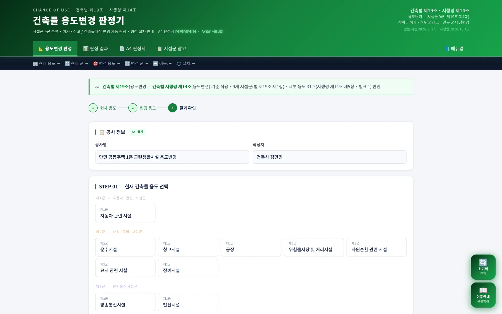
123456- 1작업 탭: 용도변경 판정 · 판정 결과 · A4 판정서 · 시설군 참고 · 매뉴얼
- 2요약 스트립: 현재·변경 용도와 시설군, 이동 방향, 절차
- 3근거 안내: 법 제19조 · 시행령 제14조 · 31개 용도
- 4진행 단계: 현재 용도 → 변경 용도 → 결과 확인
- 5공사 정보: A4 판정서 표제(공사명·작성자)
- 6오른쪽 버튼: 초기화 · 이용안내
| 탭 | 하는 일 | 본문 |
|---|---|---|
| 📐 용도변경 판정 | 공사 정보 입력 → STEP 01 현재 용도 → STEP 02 변경 용도 → 판정하기 | 3-1~3-4 |
| 📊 판정 결과 | 판정 · 근거 조항 · 행정 절차 · 주의사항 | 3-5 · 3-6 |
| 📄 A4 판정서 | A4 판정서 미리보기 · 인쇄/PDF · JPG 저장 | 3-8 |
| 📋 시설군 참고 | 9개 시설군의 세부 용도 · 판정 기준 요약 | 3-9 |
| 📘 매뉴얼 | 이 매뉴얼을 새 창으로 엽니다(인터넷 연결 필요) | 1-3 |
1-2. 작업 탭·근거 표시
- 1용도변경 판정
- 2판정 결과
- 3A4 판정서
- 4시설군 참고
- 5📘 매뉴얼 — 이 매뉴얼을 새 창으로(탭 막대 오른쪽 끝)
- 6근거 조문과 시행일(법률 2026. 2. 27. · 시행령 2026. 10. 6.)
헤더 오른쪽에 근거 조문과 시행일이 적혀 있습니다. 건축법 시행령은 자주 개정되므로, 시행일이 바뀌면 이 표시와 4장 내용을 함께 확인하십시오.
1-3. 설치·보관·매뉴얼
| 항목 | 내용 |
|---|---|
| 설치(선택) | 크롬·엣지 주소창의 설치 아이콘 또는 화면 아래 설치 안내를 누르면 앱으로 설치됩니다. 아이폰은 사파리 공유 버튼 → 「홈 화면에 추가」 |
| 오프라인 | 한 번 연 뒤에는 인터넷이 끊겨도 판정·출력이 됩니다. 매뉴얼은 인터넷에 연결되어 있을 때만 열립니다 |
| 입력값 보관 | 선택은 저장되지 않습니다. 결과는 판정서(PDF·JPG)로 남기십시오 |
| 업데이트 | 새 버전이 올라오면 다음 접속 때 자동으로 바뀝니다. 화면이 예전 그대로면 새로 고침(Ctrl+F5) |
021분 따라하기
예제 A로 6단계를 따라 하면 「허가 후 변경 가능」 판정과 근거 조항이 나옵니다.
- 공사 정보 입력「📋 공사 정보」 카드에 공사명(「만민 공동주택 1층 근린생활시설 용도변경」)과 작성자를 넣습니다. A4 판정서 표제에 들어갑니다(3-1).
- 현재 용도 선택STEP 01에서 건축물대장에 적힌 현재 용도(공동주택, 제8군)를 누릅니다(3-2).
- 변경 용도 선택STEP 02에서 바꾸려는 용도(제1종 근린생활시설, 제7군)를 누릅니다. 현재 용도 버튼은 선택할 수 없게 흐리게 표시됩니다(3-3).
- 판정하기「▶ 용도변경 가능 여부 판정하기」를 누르면 「📊 판정 결과」 탭으로 넘어가 허가 후 변경 가능(건축법 제19조 제2항 제1호)이 나옵니다(3-5).
- 행정 절차·주의사항 확인결과 아래에서 절차 순서와 주의사항(바닥면적 100㎡ · 500㎡ 기준 등)을 확인합니다(3-6).
- A4 판정서 저장「📄 A4 판정서」 탭에서 「인쇄 / PDF 저장」 또는 「JPG 저장」으로 판정서를 남깁니다(3-8).
| 항목 | 예제 A 결과 |
|---|---|
| 현재 용도 | 공동주택 (제8군) |
| 변경 용도 | 제1종 근린생활시설 (제7군) |
| 시설군 이동 | 제8군 → 제7군 (상향) |
| 판정 | 허가 후 변경 가능 |
| 행정 절차 | 허가 |
| 판정 기준 | 건축법 제19조 제2항 제1호 |
03화면별 기능 상세
판정 탭의 순서와 나머지 탭 순서로 설명합니다.
3-1. 공사 정보
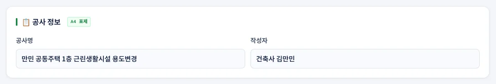
12- 1공사명
- 2작성자
비워 두어도 판정은 됩니다. 판정서에는 「—」로 표시됩니다.
3-2. 현재 용도 선택 (STEP 01)
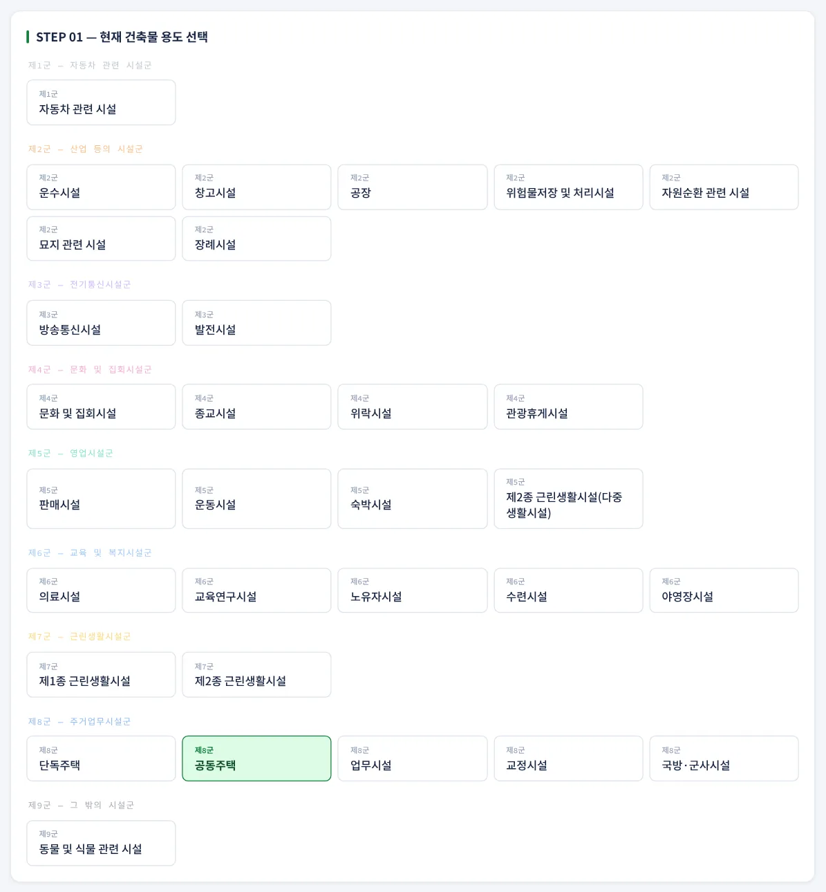
12345- 1제1군 — 번호가 가장 작은 상위군
- 2제7군 근린생활시설군
- 3제8군 주거업무시설군
- 4선택한 현재 용도(초록)
- 5제9군 — 번호가 가장 큰 하위군
- 31개 버튼이 시설군 번호 순서로 묶여 있습니다. 버튼 위 작은 글씨가 시설군입니다.
- 현재 용도는 건축물대장에 적힌 용도로 고릅니다. 같은 이름이라도 바닥면적 요건에 따라 근린생활시설이 판매시설·운동시설 등으로 갈리므로(별표 1), 면적을 먼저 확인하십시오.
- 다른 현재 용도를 누르면 변경 용도 선택과 결과가 지워집니다.
3-3. 변경 용도 선택 (STEP 02)
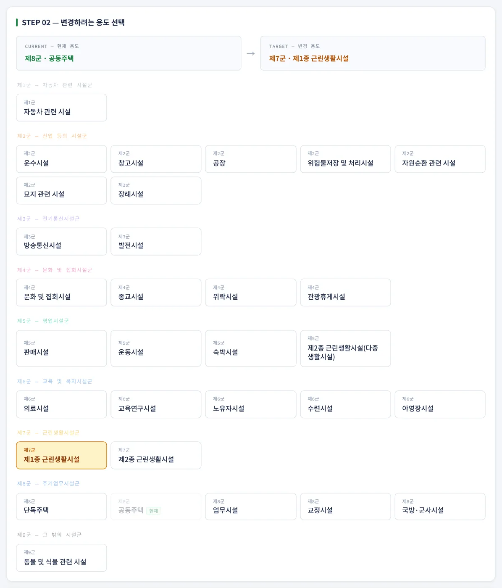
1234- 1현재 용도 표시
- 2변경 용도 표시
- 3현재 용도 — 선택 불가(「현재」 표시)
- 4선택한 변경 용도(주황)
3-4. 판정·초기화
- 1판정하기 — 두 용도를 모두 고르면 눌림
- 2처음부터 다시 선택
오른쪽 「🔄 초기화」 버튼도 같은 일을 하며 공사 정보까지 지웁니다.
3-5. 판정 결과
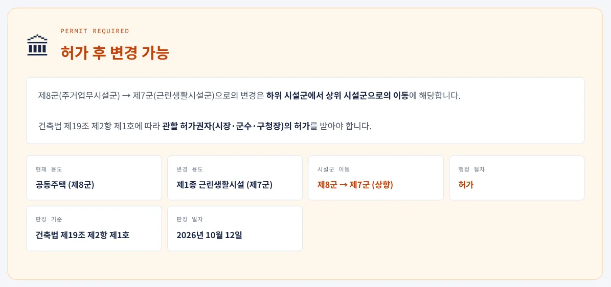
12345- 1판정 — 허가 후 변경 가능
- 2설명과 근거 조항
- 3시설군 이동(상향 · 하향 · 동일군)
- 4행정 절차
- 5판정 기준 조항
| 판정 | 조건 | 근거 |
|---|---|---|
| 🏛 허가 후 변경 가능 | 변경 용도의 시설군 번호가 더 작음(상위군) | 법 제19조 제2항 제1호 |
| 📋 신고 후 변경 가능 | 변경 용도의 시설군 번호가 더 큼(하위군) | 법 제19조 제2항 제2호 |
| 📋 건축물대장 변경신청 필요 | 같은 시설군 | 법 제19조 제3항 — 임의변경 예외는 시행령 제14조 제4항 |
3-6. 행정 절차·주의사항
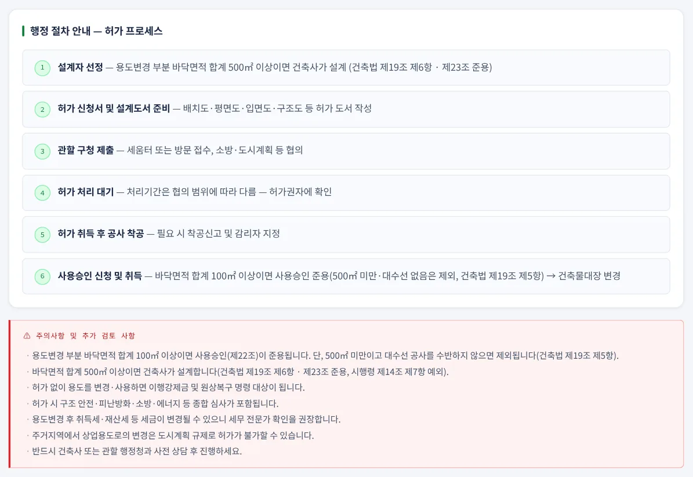
123- 1설계자 선정 — 500㎡ 이상이면 건축사 설계
- 2사용승인 — 100㎡ 이상이면 준용
- 3주의사항
- 허가·신고 결과에는 바닥면적 기준(법 제19조 제5항 · 제6항)이 주의사항에 나옵니다. 같은 시설군 결과에는 나오지 않습니다 — 두 조항은 허가·신고 대상에만 적용되기 때문입니다(4-6).
- 절차의 서류 이름은 안내용입니다. 법정 첨부 서류는 4-7을 보십시오.
3-7. 요약 스트립
- 1현재 용도
- 2변경 용도
- 3이동 방향
- 4절차
헤더 아래 띠는 어느 탭에서든 보입니다. 결과 탭을 열지 않아도 판정을 확인할 수 있습니다.
3-8. A4 판정서·출력
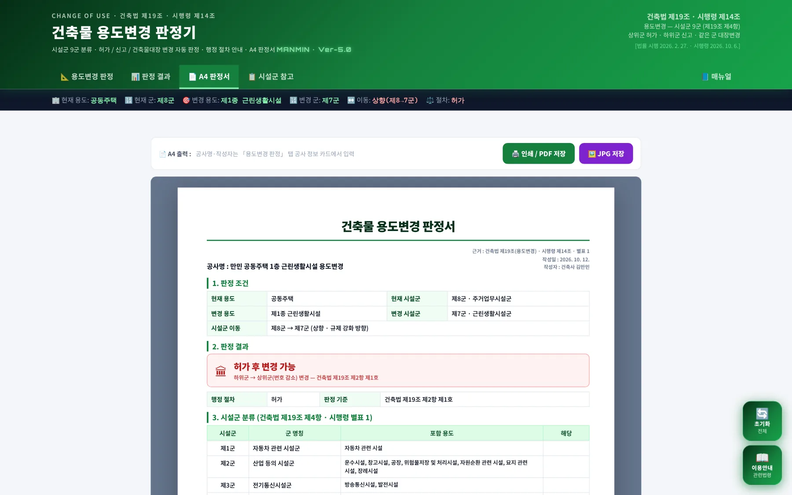
123- 1「인쇄 / PDF 저장」 — 인쇄 창 대상을 「PDF로 저장」으로
- 2「JPG 저장」 — A4 쪽 단위 그림
- 3A4 판정서
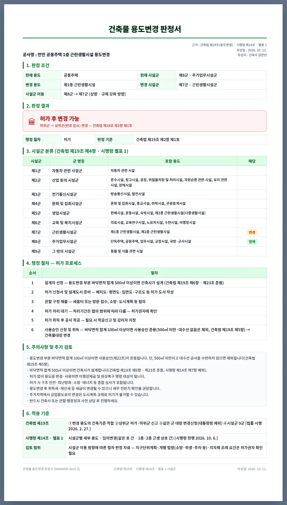
1234567- 1공사명 · 근거 · 작성일 · 작성자
- 21. 판정 조건
- 32. 판정 결과
- 43. 시설군 분류 — 현재·변경 위치 표시
- 54. 행정 절차
- 65. 주의사항
- 76. 적용 기준
판정서는 판정 결과 탭과 같은 내용을 A4 한 장에 정리합니다. 3번 표에 현재 시설군(초록)과 변경 시설군(주황)이 표시됩니다.
미리보기는 화면 폭에 맞춰 줄어들 뿐 인쇄 결과는 같습니다. 인쇄 창에서 「배경 그래픽」을 켜면 색이 함께 인쇄됩니다. 판정 전에는 「판정을 실행하세요」 안내만 나옵니다.
3-9. 시설군 참고 탭
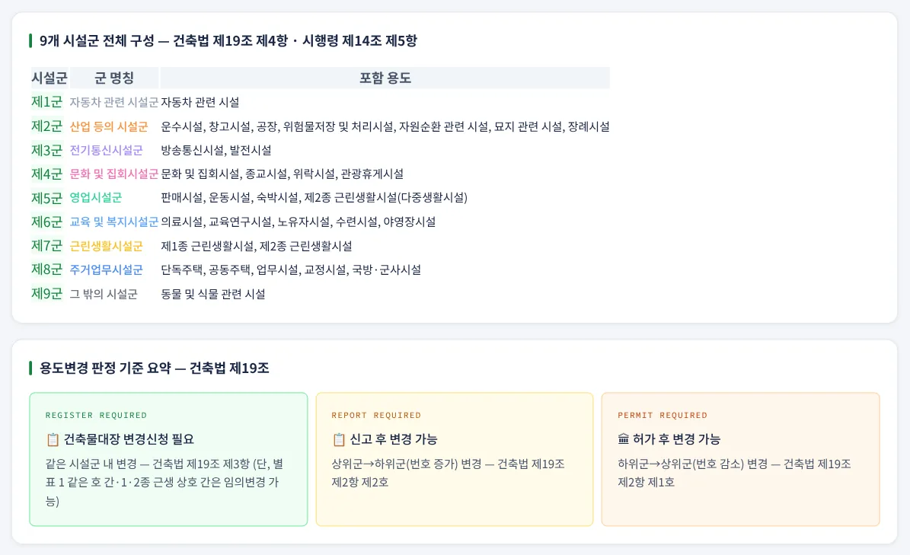
123- 1제1군 — 상위군
- 2제8군 — 교정시설 · 국방·군사시설
- 3판정 기준 요약
3-10. 이용안내 창
오른쪽 「📖 이용안내」 버튼을 누르면 창이 열립니다. 탭 3개로 사용 방법, 관련 법규, 판정 기준을 볼 수 있습니다.
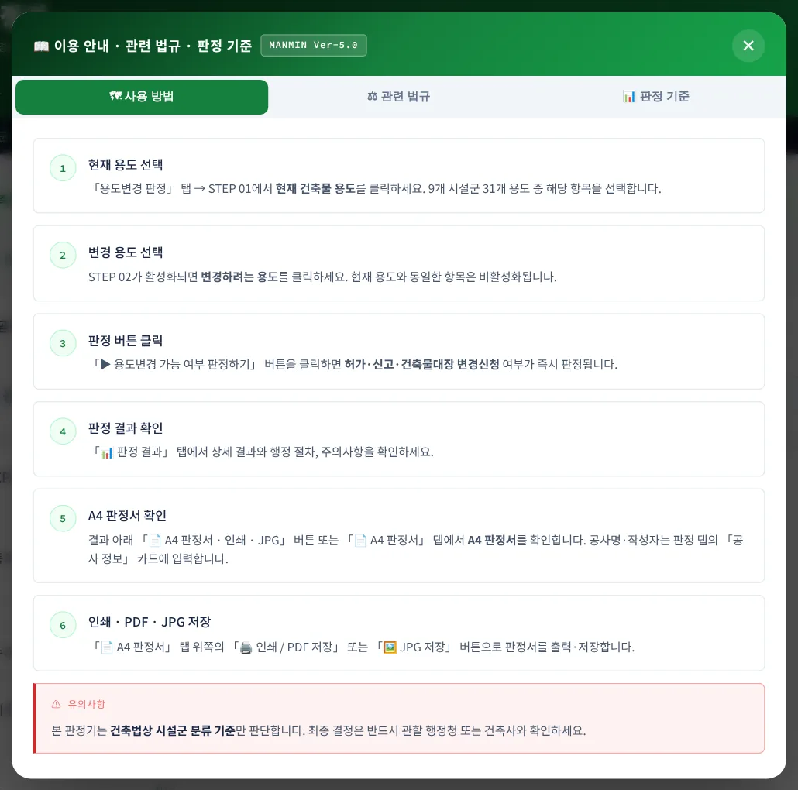
123- 1사용 방법
- 2관련 법규
- 3판정 기준
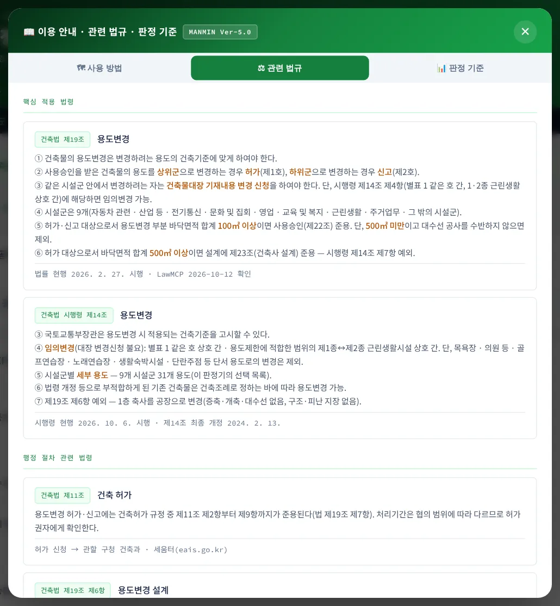
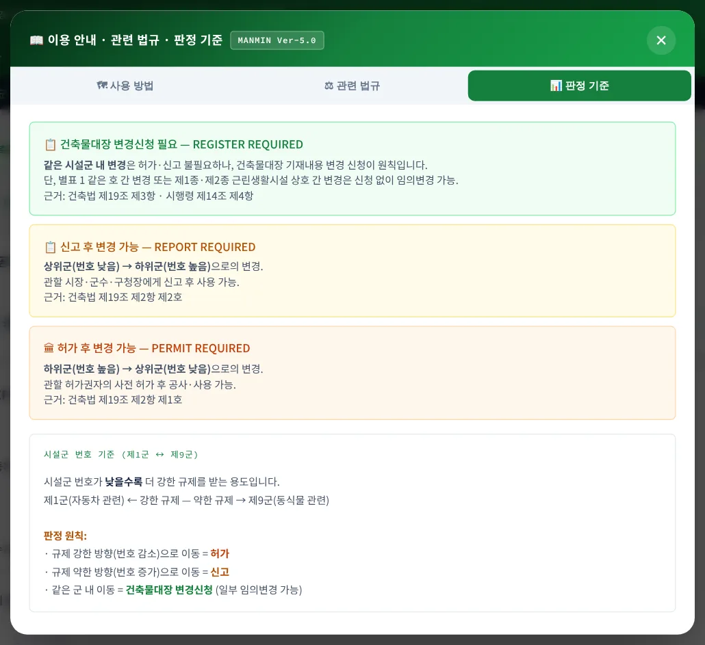
3-11. 모바일
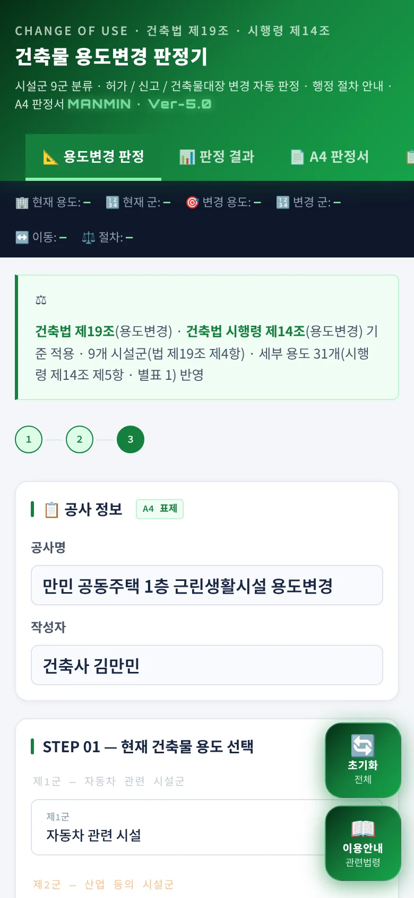
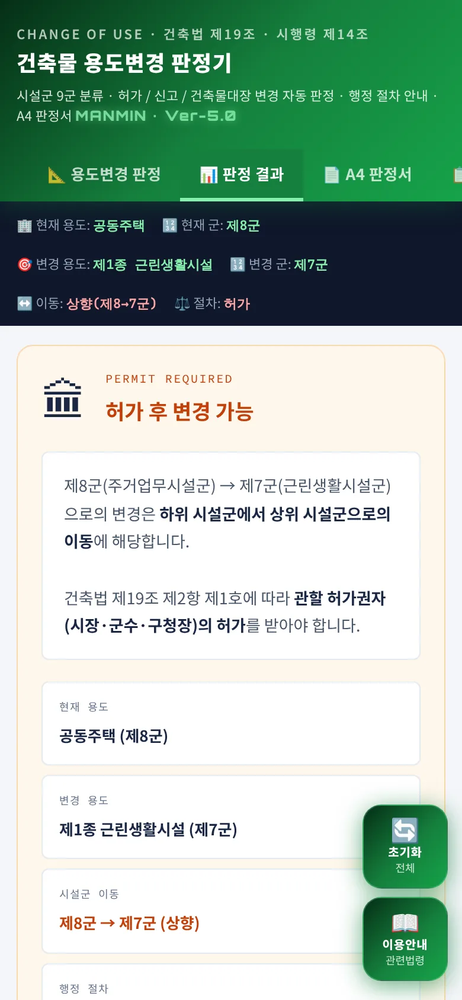
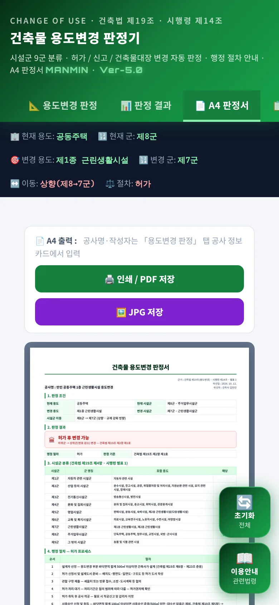
- 휴대폰에서는 카드와 버튼이 한 줄로 쌓입니다. 헤더 오른쪽 근거 표시는 좁은 화면에서 숨겨집니다.
- 탭 막대는 좌우로 밀 수 있으며, 「📘 매뉴얼」은 오른쪽 끝에 있습니다(390px 화면에서 밀어야 보임).
- 판정서는 화면 폭에 맞춰 축소되어 보이고, 저장한 PDF·JPG는 A4 크기 그대로입니다.
04기술기준 해설
조문은 LawMCP로 조회한 원문(2026-10-12 확인)을 옮긴 것입니다.
4-1. 근거 체계
| 근거 | 내용 | 시행·개정 |
|---|---|---|
| 건축법 제19조 | 용도변경 — 허가·신고·대장 변경신청의 구분, 시설군 9개, 사용승인·설계 준용 | 2026.2.27. 시행(현행) |
| 건축법 시행령 제14조 | 임의변경(④) · 시설군별 세부 용도(⑤) · 기존 부적합 건축물(⑥) · 설계 준용 예외(⑦) | 2026.10.6. 시행(현행) · 제14조 최종 개정 2024.2.13. |
| 건축법 시행령 별표 1 | 용도별 건축물의 종류 — 1호~29호(23호의2 포함 30개 호) | 2025.10.1. 개정 |
| 건축법 시행규칙 제12조의2 | 용도변경 허가 신청서 · 신고서와 첨부 서류 | 2026.2.27. 시행(현행) |
4-2. 건축법 제19조 (용도변경)
| 항 | 원문 |
|---|---|
| ① | 건축물의 용도변경은 변경하려는 용도의 건축기준에 맞게 하여야 한다. |
| ② | 제22조에 따라 사용승인을 받은 건축물의 용도를 변경하려는 자는 다음 각 호의 구분에 따라 국토교통부령으로 정하는 바에 따라 특별자치시장·특별자치도지사 또는 시장·군수·구청장의 허가를 받거나 신고를 하여야 한다. |
| ②1호 | 허가 대상: 제4항 각 호의 어느 하나에 해당하는 시설군(施設群)에 속하는 건축물의 용도를 상위군(제4항 각 호의 번호가 용도변경하려는 건축물이 속하는 시설군보다 작은 시설군을 말한다)에 해당하는 용도로 변경하는 경우 |
| ②2호 | 신고 대상: 제4항 각 호의 어느 하나에 해당하는 시설군에 속하는 건축물의 용도를 하위군(제4항 각 호의 번호가 용도변경하려는 건축물이 속하는 시설군보다 큰 시설군을 말한다)에 해당하는 용도로 변경하는 경우 |
| ③ | 제4항에 따른 시설군 중 같은 시설군 안에서 용도를 변경하려는 자는 국토교통부령으로 정하는 바에 따라 특별자치시장·특별자치도지사 또는 시장·군수·구청장에게 건축물대장 기재내용의 변경을 신청하여야 한다. 다만, 대통령령으로 정하는 변경의 경우에는 그러하지 아니하다. |
| ④ | 시설군은 다음 각 호와 같고 각 시설군에 속하는 건축물의 세부 용도는 대통령령으로 정한다. 1. 자동차 관련 시설군 2. 산업 등의 시설군 3. 전기통신시설군 4. 문화 및 집회시설군 5. 영업시설군 6. 교육 및 복지시설군 7. 근린생활시설군 8. 주거업무시설군 9. 그 밖의 시설군 |
| ⑤ | 제2항에 따른 허가나 신고 대상인 경우로서 용도변경하려는 부분의 바닥면적의 합계가 100제곱미터 이상인 경우의 사용승인에 관하여는 제22조를 준용한다. 다만, 용도변경하려는 부분의 바닥면적의 합계가 500제곱미터 미만으로서 대수선에 해당되는 공사를 수반하지 아니하는 경우에는 그러하지 아니하다. |
| ⑥ | 제2항에 따른 허가 대상인 경우로서 용도변경하려는 부분의 바닥면적의 합계가 500제곱미터 이상인 용도변경(대통령령으로 정하는 경우는 제외한다)의 설계에 관하여는 제23조를 준용한다. |
| ⑦ | 제1항과 제2항에 따른 건축물의 용도변경에 관하여는 다음 규정을 준용한다(원문은 한 문장). |
| ⑦ 건축법 | 제3조, 제5조, 제6조, 제7조, 제11조제2항부터 제9항까지, 제12조, 제14조부터 제16조까지, 제18조, 제20조, 제27조, 제29조, 제38조, 제42조부터 제44조까지, 제48조부터 제50조까지, 제50조의2, 제51조부터 제56조까지, 제58조, 제60조부터 제64조까지, 제67조, 제68조, 제78조부터 제87조까지 |
| ⑦ 다른 법 | 「녹색건축물 조성 지원법」 제15조 및 「국토의 계획 및 이용에 관한 법률」 제54조 |
4-3. 허가·신고·대장 변경신청
시설군 번호는 법 제19조 제4항의 각 호 번호입니다. 번호가 작을수록 상위군입니다. 같은 용도 안에서 세부 용도만 바꾸는 경우(예: 같은 호 안)는 시행령 제14조 제4항 제1호의 임의변경 대상인지 먼저 봅니다(4-5).
4-4. 시설군과 세부 용도 (시행령 제14조 제5항)
| 시설군 | 이름(법 제19조④) | 세부 용도(별표 1 호) |
|---|---|---|
| 제1군 | 자동차 관련 시설군 | 자동차 관련 시설(20호) |
| 제2군 | 산업 등의 시설군 | 운수시설(8호) · 창고시설(18호) · 공장(17호) · 위험물 저장 및 처리 시설(19호) · 자원순환 관련 시설(22호) · 묘지 관련 시설(26호) · 장례시설(28호) |
| 제3군 | 전기통신시설군 | 방송통신시설(24호) · 발전시설(25호) |
| 제4군 | 문화 및 집회시설군 | 문화 및 집회시설(5호) · 종교시설(6호) · 위락시설(16호) · 관광 휴게시설(27호) |
| 제5군 | 영업시설군 | 판매시설(7호) · 운동시설(13호) · 숙박시설(15호) · 제2종 근린생활시설 중 다중생활시설(4호 거목) |
| 제6군 | 교육 및 복지시설군 | 의료시설(9호) · 교육연구시설(10호) · 노유자시설(11호) · 수련시설(12호) · 야영장 시설(29호) |
| 제7군 | 근린생활시설군 | 제1종 근린생활시설(3호) · 제2종 근린생활시설(4호, 다중생활시설 제외) |
| 제8군 | 주거업무시설군 | 단독주택(1호) · 공동주택(2호) · 업무시설(14호) · 교정시설(23호) · 국방·군사시설(23호의2) |
| 제9군 | 그 밖의 시설군 | 동물 및 식물 관련 시설(21호) |
4-5. 임의변경 (시행령 제14조 제4항)
법 제19조 제3항 단서에서 「대통령령으로 정하는 변경」은 다음 건축물 상호 간의 용도변경입니다. 이 경우 건축물대장 기재내용 변경을 신청하지 않아도 됩니다.
| 구분 | 원문 |
|---|---|
| 제1호 | 별표 1의 같은 호에 속하는 건축물 상호 간의 용도변경 |
| 제2호 | 「국토의 계획 및 이용에 관한 법률」이나 그 밖의 관계 법령에서 정하는 용도제한에 적합한 범위에서 제1종 근린생활시설과 제2종 근린생활시설 상호 간의 용도변경 |
다만, 아래 용도로 변경하는 경우는 임의변경에서 제외됩니다(같은 항 단서).
| 별표 1 | 용도 | 해당 시설 |
|---|---|---|
| 제3호 다목 | 제1종 근린생활시설 | 목욕장만 |
| 제3호 라목 | 제1종 근린생활시설 | 의원 · 치과의원 · 한의원 · 침술원 · 접골원 · 조산원 · 안마원 · 산후조리원 등 |
| 제4호 가목 | 제2종 근린생활시설 | 공연장(500㎡ 미만) |
| 제4호 사목 | 제2종 근린생활시설 | 청소년게임제공업소 · 복합유통게임제공업소 · 인터넷컴퓨터게임시설제공업소 · 가상현실체험 제공업소 등 |
| 제4호 카목 | 제2종 근린생활시설 | 학원 · 교습소 · 직업훈련소(500㎡ 미만) |
| 제4호 파목 | 제2종 근린생활시설 | 골프연습장 · 놀이형시설만 |
| 제4호 더목 | 제2종 근린생활시설 | 단란주점(150㎡ 미만) |
| 제4호 러목 | 제2종 근린생활시설 | 안마시술소 · 노래연습장 |
| 제4호 머목 | 제2종 근린생활시설 | 주문배송시설(500㎡ 미만) |
| 제7호 다목2) | 판매시설 | 게임제공업 시설로서 제2종 근린생활시설에 해당하지 않는 상점 |
| 제15호 가목 | 숙박시설 | 생활숙박시설만 |
| 제16호 가목 · 나목 | 위락시설 | 단란주점(제2종 근린생활시설 아닌 것) · 유흥주점 |
4-6. 사용승인·설계 준용 (법 제19조 제5항 · 제6항)
| 구분 | 대상 | 기준 | 예외 |
|---|---|---|---|
| 사용승인(제22조) 준용 | 허가 · 신고 | 용도변경 부분 바닥면적 합계 100㎡ 이상 | 500㎡ 미만이고 대수선 공사를 수반하지 않으면 제외 |
| 설계(제23조 — 건축사) 준용 | 허가 | 용도변경 부분 바닥면적 합계 500㎡ 이상 | 1층 축사를 공장으로 변경하는 경우로서 증축·개축·대수선이 없고 구조 안전·피난 등에 지장이 없는 경우 제외(시행령 제14조 제7항) |
건축물대장 변경신청 대상(같은 시설군)에는 두 조항이 적용되지 않습니다.
4-7. 허가·신고 서류 (시행규칙 제12조의2)
| 구분 | 내용 |
|---|---|
| 허가 | 별지 제1호의4서식 건축·대수선·용도변경 (변경)허가 신청서 |
| 신고 | 별지 제6호서식 건축·대수선·용도변경 (변경)신고서 |
| 첨부(공통) | 1. 용도를 변경하려는 층의 변경 후의 평면도 2. 용도변경에 따라 변경되는 내화·방화·피난 또는 건축설비에 관한 사항을 표시한 도서 |
| 변경 전 평면도 | 허가권자가 건축물대장 또는 전산자료로 확인(확인할 수 없으면 제출 요구) — 제2항 |
| 발급 | 허가서(별지 제2호서식) · 신고필증(별지 제7호서식) — 제4항 · 제5항 |
4-8. 프로그램의 판정 순서
_tools/verify_cou_judge.js).4-9. 프로그램이 다루지 않는 것
| 항목 | 내용 | 처리 |
|---|---|---|
| 건축기준 적합 | 변경 용도의 건축기준(피난·방화·구조·설비 등) — 법 제19조 제1항 | 설계 검토로 확인 |
| 용도지역·지구 건축 제한 | 「국토의 계획 및 이용에 관한 법률」에 따른 용도지역별 건축 제한 | 토지이용계획 확인 |
| 바닥면적에 따른 용도 구분 | 별표 1의 면적 요건(예: 휴게음식점 300㎡ · 학원 500㎡)에 따라 근린생활시설인지 다른 용도인지 | 선택 전에 사용자가 판단 |
| 임의변경 여부 | 시행령 제14조 제4항 — 같은 호 · 제1종↔제2종 근린생활시설, 단서 제외 용도 | 4-5 표로 확인 |
| 조례에 따른 용도변경 | 시행령 제14조 제6항 — 법령 개정 등으로 부적합하게 된 기존 건축물 | 해당 지자체 건축조례 |
| 개별 법령 | 소방시설 · 주차장 · 위생 · 영업 신고 등 | 각 법령으로 별도 검토 |
4-10. 적용 시점
| 기준 | 확인한 판 |
|---|---|
| 건축법 | 2026.2.27. 시행(현행) — 제19조 최종 개정 2019.4.30.(⑦) · ⑤ 2016.1.19.. 2026.11.12. 시행 예정 개정에서도 제19조는 같음 |
| 건축법 시행령 | 2026.10.6. 시행(현행) — 제14조 최종 개정 2024.2.13.(④), 제5항 2023.5.15. 개정. 2027.4.7. 시행 예정 개정에서도 제14조는 같음 |
| 건축법 시행령 별표 1 | 2025.10.1. 개정본 |
| 건축법 시행규칙 | 2026.2.27. 시행(현행) — 제12조의2 |
05실무 작업 방법
건축주 상담부터 허가·신고 서류 준비까지의 순서입니다.
5-1. 단계별 절차
| 단계 | 할 일 | 본문 |
|---|---|---|
| 1. 현재 용도 확인 | 건축물대장의 용도와 바닥면적, 사용승인 여부(법 제19조②은 사용승인을 받은 건축물 대상) | 3-2 |
| 2. 변경 용도 분류 | 별표 1의 면적 요건까지 따져 변경 후 용도의 호를 정함 | 4-4 · 4-9 |
| 3. 판정 | 판정기로 허가 · 신고 · 대장 변경신청 구분과 근거 조항 확인 | 3-5 |
| 4. 입지·기준 검토 | 용도지역 건축 제한, 변경 용도의 건축기준(피난·방화·구조·설비), 주차·소방 | 4-9 |
| 5. 규모 기준 | 용도변경 부분 바닥면적 합계 — 100㎡(사용승인) · 500㎡(사용승인 면제 한계 · 건축사 설계) | 4-6 |
| 6. 서류·제출 | 허가 신청서 또는 신고서 + 변경 후 평면도 + 내화·방화·피난·설비 도서, 판정서 PDF 첨부(참고) | 4-7 · 3-8 |
5-2. 제출 전 확인
| 항목 | 확인 내용 |
|---|---|
| 현재 용도 | 건축물대장 용도와 판정기 선택이 같은지 |
| 변경 용도 | 면적 요건 때문에 다른 호(예: 제2종 근린생활시설 → 판매시설)로 바뀌지 않는지 |
| 같은 시설군 | 임의변경 대상인지, 제외 용도(4-5)로 바꾸는 것은 아닌지 |
| 바닥면적 | 용도변경 부분 합계가 100㎡ · 500㎡ 기준을 넘는지, 대수선 공사가 있는지 |
| 용도지역 | 변경 용도가 그 용도지역에서 건축 가능한지 |
| 개별 법령 | 소방시설 · 주차대수 · 영업 신고 요건을 확인했는지 |
5-3. 예제 B — 신고
판매시설(제5군 영업시설군) → 업무시설(제8군 주거업무시설군) · 공사명 「만민 판매시설 업무시설 용도변경」
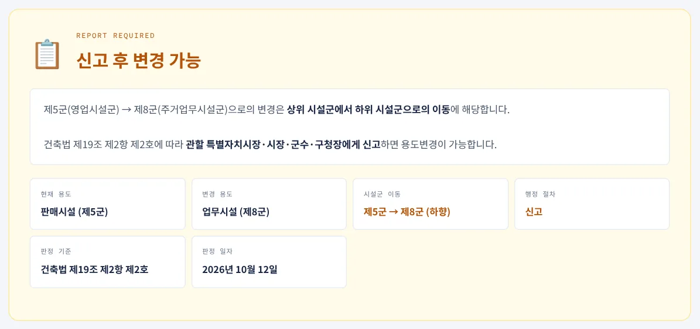
123- 1판정 — 신고 후 변경 가능
- 2제5군 → 제8군(하향)
- 3판정 기준 — 법 제19조 제2항 제2호
| 항목 | 예제 B 결과 |
|---|---|
| 현재 용도 | 판매시설 (제5군) |
| 변경 용도 | 업무시설 (제8군) |
| 시설군 이동 | 제5군 → 제8군 (하향) |
| 판정 | 신고 후 변경 가능 |
| 행정 절차 | 신고 |
| 판정 기준 | 건축법 제19조 제2항 제2호 |
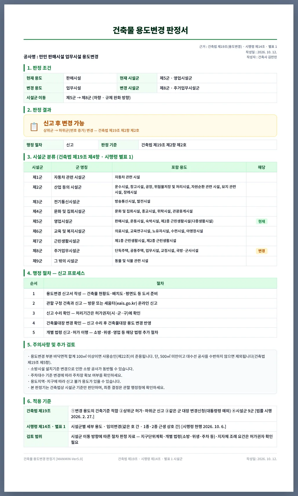
시설군 번호가 커지는(하위군) 변경이므로 신고 대상입니다. 용도변경 부분 바닥면적 합계가 100㎡ 이상이면 사용승인 규정이 준용되며, 500㎡ 미만이고 대수선 공사를 수반하지 않으면 사용승인 준용에서 제외됩니다.
5-4. 예제 C — 같은 시설군
제1종 근린생활시설 → 제2종 근린생활시설 (모두 제7군 근린생활시설군)
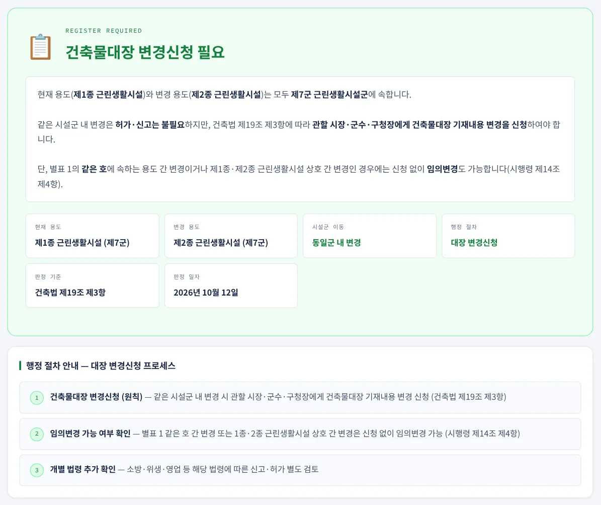
1234- 1판정 — 건축물대장 변경신청 필요
- 2설명 — 임의변경 안내(시행령 제14조 제4항)
- 3판정 기준 — 법 제19조 제3항
- 4임의변경 가능 여부 확인
| 항목 | 예제 C 결과 |
|---|---|
| 현재 용도 | 제1종 근린생활시설 (제7군) |
| 변경 용도 | 제2종 근린생활시설 (제7군) |
| 시설군 이동 | 동일군 내 변경 |
| 판정 | 건축물대장 변경신청 필요 |
| 행정 절차 | 대장 변경신청 |
| 판정 기준 | 건축법 제19조 제3항 |
같은 시설군이므로 원칙은 건축물대장 기재내용 변경신청입니다. 제1종과 제2종 근린생활시설 상호 간은 용도제한에 적합한 범위에서 임의변경 대상이지만(시행령 제14조 제4항 제2호), 바꾸려는 시설이 목욕장 · 의원 · 공연장 · 학원 · 골프연습장 · 단란주점 · 노래연습장 등 단서 용도이면 변경신청을 해야 합니다(4-5).
06문제 해결·FAQ
| 증상·질문 | 답 |
|---|---|
| 판정 버튼이 눌리지 않습니다 | 현재 용도와 변경 용도를 모두 골라야 버튼이 켜집니다. 현재 용도를 다시 누르면 변경 용도 선택이 지워집니다. |
| 같은 시설군인데 임의변경 아닌가요 | 판정기는 같은 시설군이면 원칙(대장 변경신청)을 표시합니다. 같은 호 상호 간 또는 제1종↔제2종 근린생활시설이면 4-5의 제외 용도를 확인한 뒤 임의변경 여부를 판단하십시오. |
| 근린생활시설인지 판매시설인지 모르겠습니다 | 별표 1의 바닥면적 요건(같은 건축물에서 해당 용도로 쓰는 바닥면적 합계)으로 정해집니다. 예: 소매점은 1천㎡ 미만이면 제1종 근린생활시설, 이상이면 판매시설. |
| 「교정 및 군사시설」이 없어졌습니다 | 2023.5.15. 시행령 개정으로 교정시설과 국방·군사시설로 나뉘었습니다(v5.0.6 반영). |
| 신고인데 건축사가 설계해야 하나요 | 법 제19조 제6항의 건축사 설계 준용은 허가 대상(500㎡ 이상)에만 적용됩니다. 다만 관계 법령에 따라 다른 이유로 설계 도서가 필요할 수 있습니다. |
| 처리 기간은 얼마인가요 | 판정기는 처리 기간을 표시하지 않습니다. 협의 범위에 따라 다르므로 허가권자에게 확인하십시오. |
| JPG 저장이 되지 않습니다 | 「A4 판정서」 탭에서 눌러야 합니다. 그림 저장 라이브러리는 인터넷에서 내려받으므로, 오프라인에서 실패하면 인터넷에 연결해 한 번 연 뒤 다시 시도합니다. |
| 매뉴얼 버튼을 눌러도 열리지 않습니다 | 매뉴얼은 인터넷에 연결되어 있을 때만 열립니다. 휴대폰에서는 탭 막대를 왼쪽으로 밀면 버튼이 보입니다. |
A부록
A1. 예제 입력값
| 항목 | 예제 A | 예제 B | 예제 C |
|---|---|---|---|
| 공사명 | 만민 공동주택 1층 근린생활시설 용도변경 | 만민 판매시설 업무시설 용도변경 | 만민 근린생활시설 용도변경 |
| 현재 용도 | 공동주택 (제8군) | 판매시설 (제5군) | 제1종 근린생활시설 (제7군) |
| 변경 용도 | 제1종 근린생활시설 (제7군) | 업무시설 (제8군) | 제2종 근린생활시설 (제7군) |
| 판정 | 허가 후 변경 가능 | 신고 후 변경 가능 | 건축물대장 변경신청 필요 |
| 판정 기준 | 건축법 제19조 제2항 제1호 | 건축법 제19조 제2항 제2호 | 건축법 제19조 제3항 |
A2. 버전 변경 내역
| 버전 | 내용 |
|---|---|
| Ver-5.0 · v5.0.6 (2026-10-12) | 사용자 매뉴얼 연결(탭 막대 「📘 매뉴얼」) · 근거 표기 정정 — 신고 근거 제19조 제3항 → 제2항 제2호, 허가 근거 제2항 제1호, 같은 시설군 판정 기준 제3항 · 주거업무시설군 「교정 및 군사시설」 → 교정시설 · 국방·군사시설(2023.5.15. 개정) · 이용안내의 시행령 제14조 설명을 원문 구성으로, 「건축사법 제23조」 → 법 제19조 제6항(제23조 준용) · 바닥면적 100㎡·500㎡ 기준을 허가·신고 결과로 옮기고 제5항 단서 추가 · 근거 없는 처리 기간·서류 간소화 문구 삭제 · 같은 시설군 결과의 절차 제목 · 사용 방법 문구 · 시행령 시행일 2026. 10. 6. |
| Ver-5.0 · v5.0.0~v5.0.5 (2026-09) | 디자인 통일(헤더·탭 막대·요약 스트립), A4 판정서 탭, JPG 저장, 오프라인 캐시 개선 |
A3. 용어
| 용어 | 뜻 |
|---|---|
| 용도변경 | 건축물의 용도를 다른 용도로 바꾸는 것 — 법 제19조 |
| 시설군 | 용도변경 절차를 정하려고 용도를 묶은 9개 군 — 법 제19조 제4항 |
| 상위군 · 하위군 | 시설군 번호가 더 작은 군 · 더 큰 군 — 법 제19조 제2항 |
| 건축물대장 기재내용 변경신청 | 같은 시설군 안에서 용도를 바꿀 때 대장의 용도를 고쳐 달라고 신청하는 것 — 법 제19조 제3항 |
| 임의변경 | 대장 변경신청 없이 할 수 있는 같은 시설군 안의 변경 — 시행령 제14조 제4항 |
| 다중생활시설 | 고시원업 시설 — 500㎡ 미만은 제2종 근린생활시설(영업시설군), 그 외는 숙박시설 |
| 사용승인 | 건축물을 사용하기 전에 받는 승인 — 법 제22조, 용도변경에는 제19조 제5항으로 준용 |